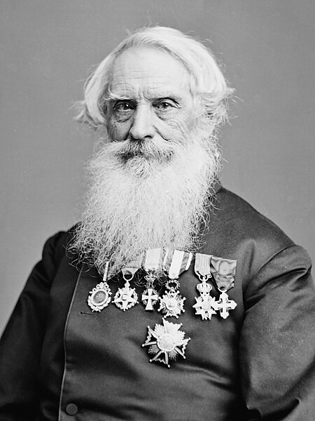
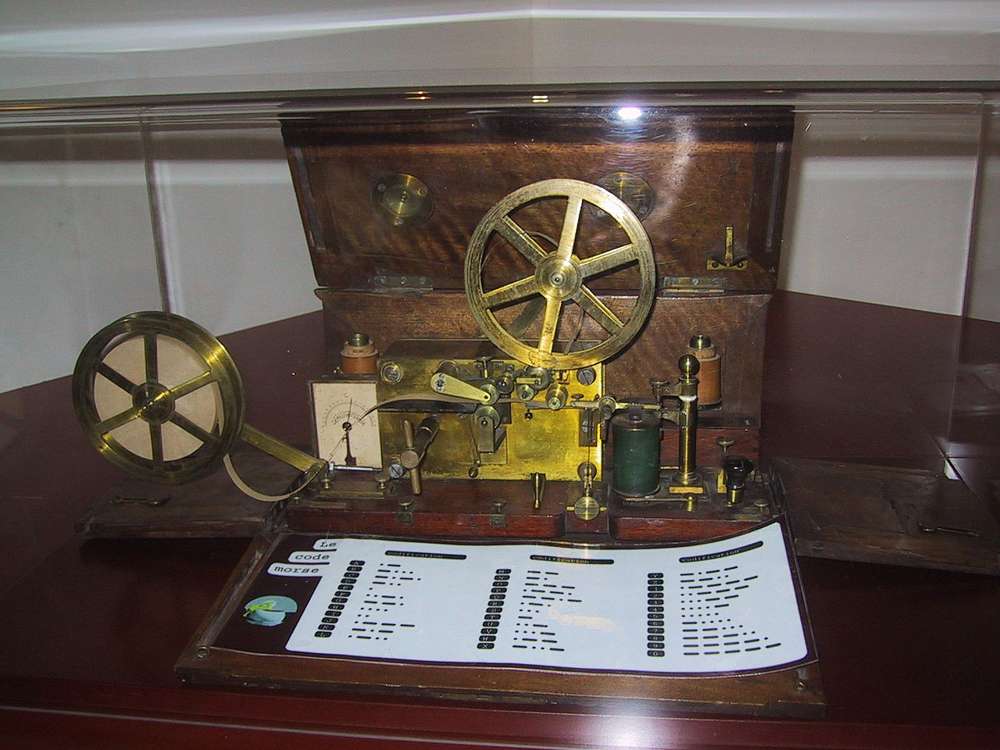
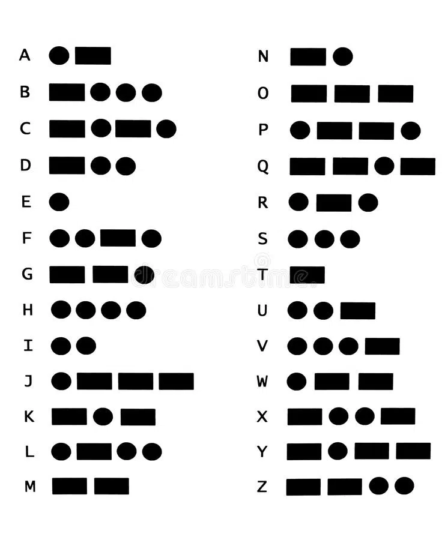

Samuel Morse

Son histoire
Samuel Morse est un artiste et scientifique Américain né à Charlestown en Massachusetts le 27 avril 1791 et décède à New York le 2 avril 1872
Inventions
Samuel Morse a plusieurs inventions a son actif , on peut citée:
- Telegraphe de Morse
- Un alphabet
Telegraphe de Morse
Le Télégraphe de Morse est crée en 1837, celui-ci a été crée pour faciliter la communication internationnal. Il utilise les ondes pour envoyer des messages gràce à un alphabet spécial.

Alphabet Morse
L'alphabet Morse est liée au Télégraphe Morse, celui-ci s'appuye sur un système de pression et acoup distinct qui représente les lettres de l'alphabet classique. On peut les distinguer gràce au levier présent sur le Télégraphe Morse qui s'abaisse et se relève en fonction des lettres .
